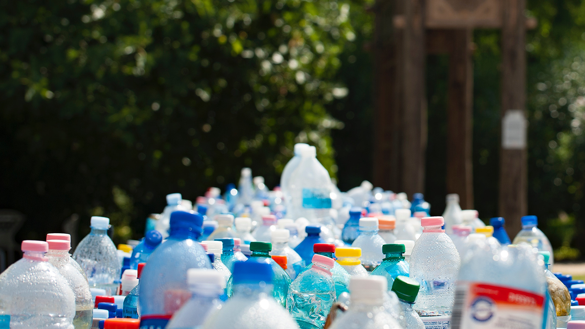

The group promotes and co-ordinates recycling at Onslow. We advocate for waste minimisation at the school, including reduction in plastics. See this video about plastics in the ocean here. We also organise school cleanups, show films and promote Onslow’s reusable cups.
We have a team who work to reduce waste, promote recycling and experiment with innovative ways to make Onslow very good at these things. There are also a couple of co-leaders who work with teachers and co-ordinate the team.